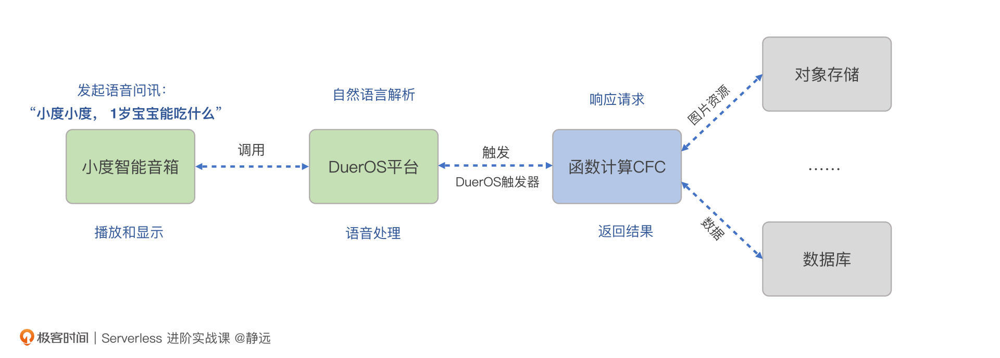
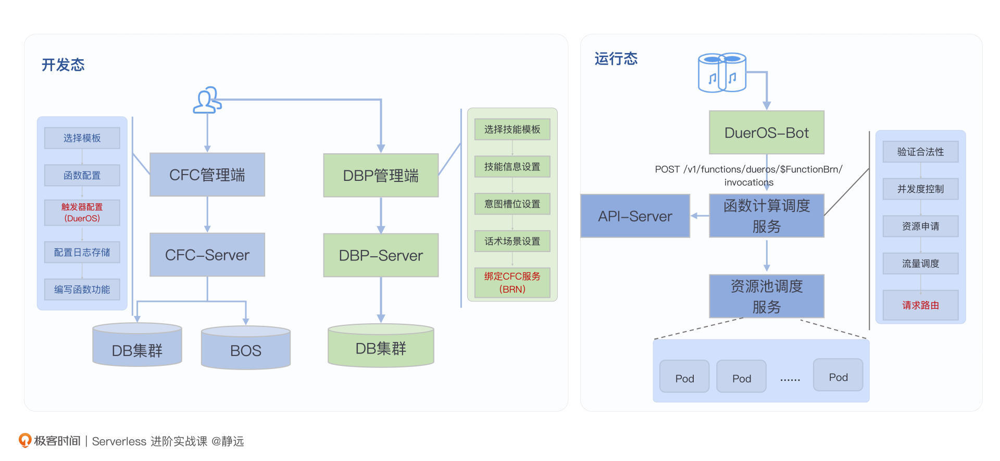
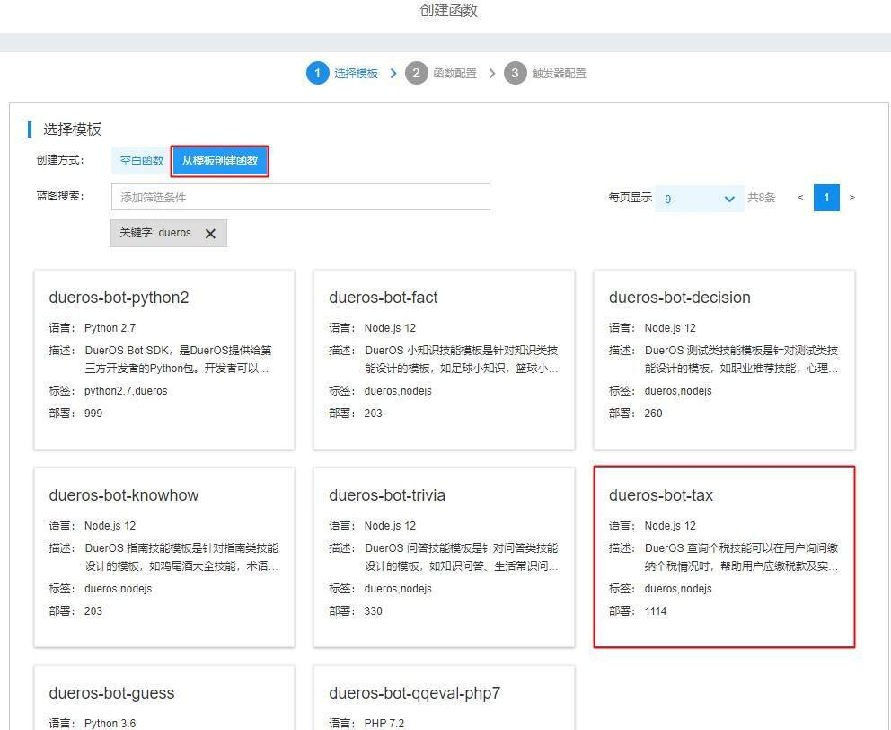
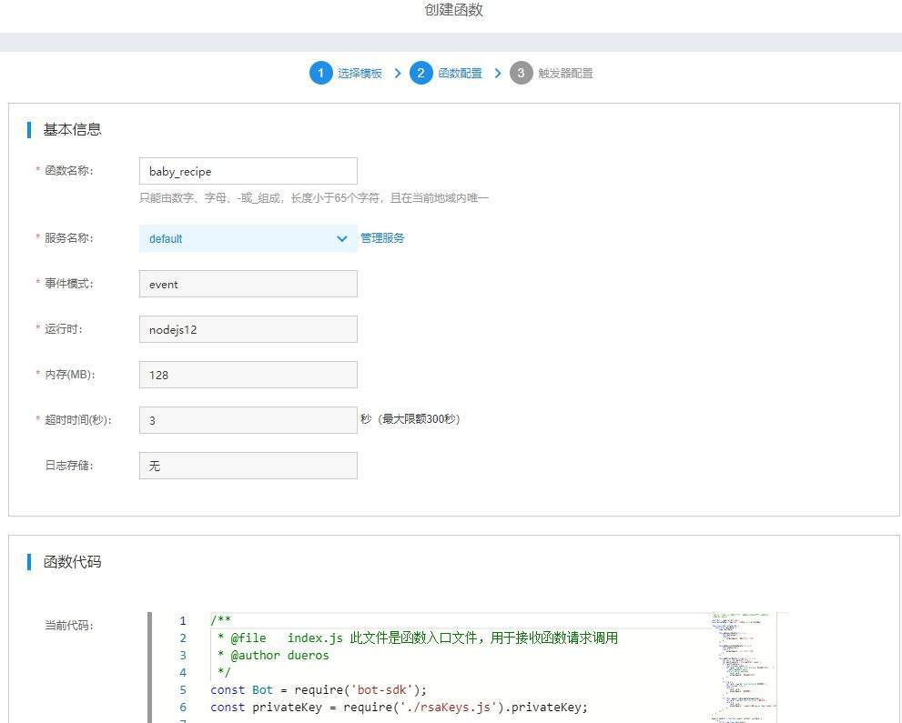
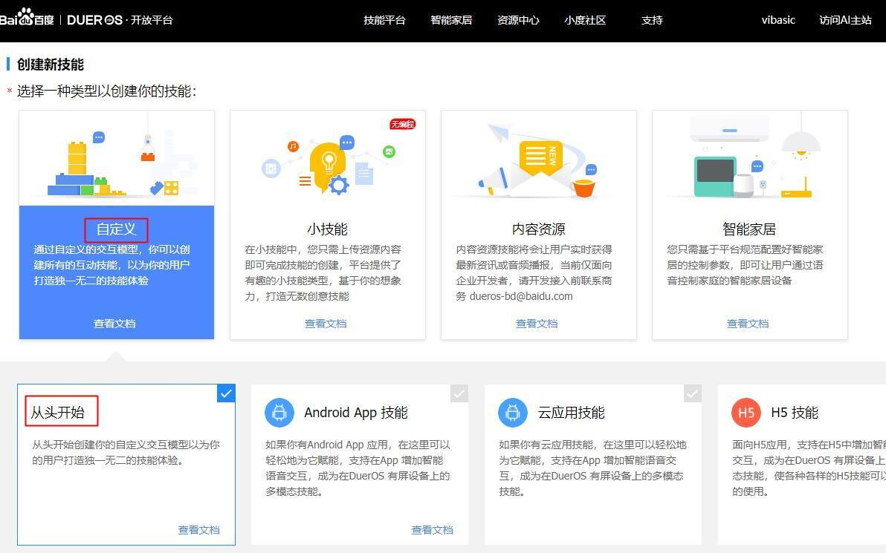
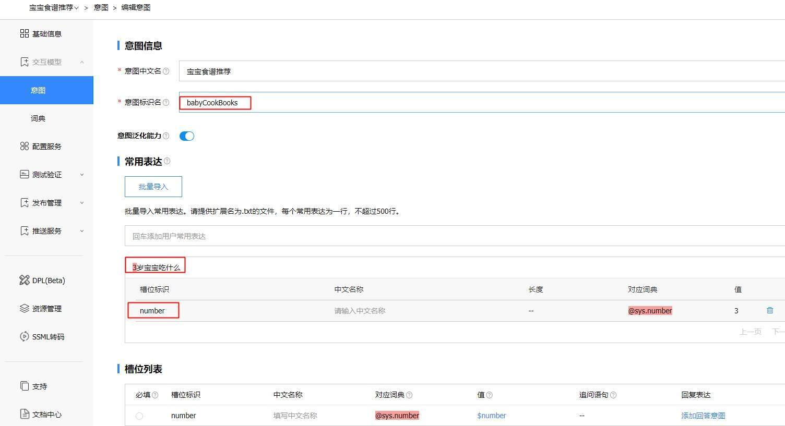
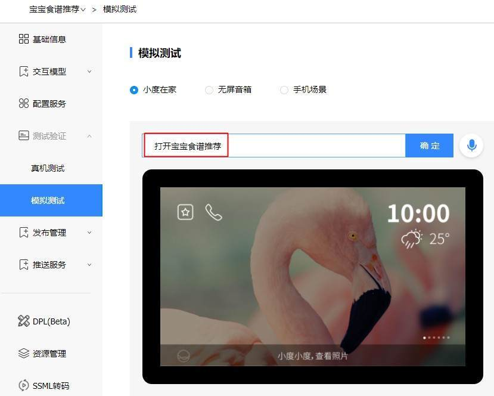
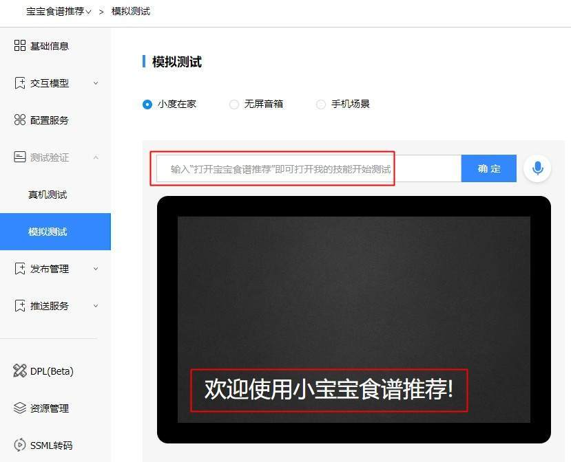
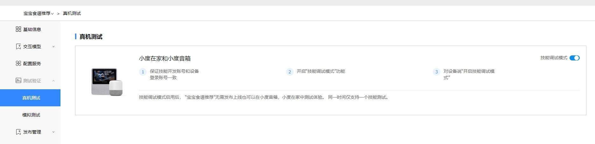

- 00 开篇词 Serverless是降本增效浪潮下的必然选择.md.html
- 00 思维构建 如何在新赛道下进阶Serverless能力？.md.html
- 01 生命周期：函数计算的基本流程是如何执行的？.md.html
- 02 触发器：如何构建事件源与函数计算的纽带？.md.html
- 03 高级属性：应对生产级别的应用，你需要掌握哪些技能？.md.html
- 04 冷启动：如何加快函数的第一次调用过程？.md.html
- 05 扩缩容：如何应对流量的波峰波谷？.md.html
- 06 流量转发：函数在不同情形下是如何执行的？.md.html
- 07 运行时（上）：不同语言形态下的函数在容器中是如何执行的？.md.html
- 08 运行时（下）：不同语言形态下的函数在容器中是如何执行的？.md.html
- 09 小试牛刀（一）：如何利用函数之间的调用解决业务问题？.md.html
- 10 小试牛刀（二）：如何突破VPC网络的速度限制？.md.html
- 11 WebIDE：如何让函数远离繁琐的本地开发模式？.md.html
- 12 编排：如何协调多任务的运行？.md.html
- 13 可观测（上）： 如何构建多维度视角下的Serverless监测体系？.md.html
- 14 可观测（下）： 如何构建多维度视角下的Serverless监测体系？.md.html
- 15 选型：不同阶段的数据应如何存储？.md.html
- 16 动手体验（一）：如何实现业务高效率地开发上线？.md.html
- 17 动手体验（二）：如何在云函数场景下实现一个有状态的服务？.md.html
- 18 实战指南：Serverless沙场老兵的一线使用经验.md.html
- 19 实战进阶（一）：Serverless “连接器” 的能力到底有多大？.md.html
- 20 实战进阶（二）：如何基于智能音箱开发一个BOT技能？.md.html
- 21 实战进阶（三）：传统的服务如何迁移到Serverless平台？.md.html
- 22 私有云：赛马时代的Serverless核心引擎谁能胜出？.md.html
- 23 实战进阶（四）：如何从0到1进阶一个开源引擎？.md.html
- 24 实战进阶（五）：如何从Serverless引擎蜕变成一个Serverless平台？.md.html
- 结束语 在实战中把握事物本质，不断革新.md.html
- 捐赠
20 实战进阶（二）：如何基于智能音箱开发一个BOT技能？
你好，我是静远。
上节课，我们一起感受了FaaS 作为Serverless “连接器”的强大，但也仅限于云厂商单个云平台上的体验。
今天，我将带你体验跨平台的开发，通过智能音箱、IOT 开发平台、云函数计算平台三者之间的联动，一起完成一个不同年龄段宝宝食谱推荐BOT技能的开发。
你也可以通过这样的方式，完成智能客服、智能问答等对话式应用的开发。通过这个实战，相信你能进一步感受到Serverless的无限可能。
如何实现
我们本次的目标是通过语音对话的方式来完成宝宝食谱的推荐。这个功能符合Serverless的特性：事件触发、轻量应用、按需调用、流量不固定。同时，该功能需要有语音转文字的处理能力以及一个物理载体。
因此，我们以百度智能云函数计算平台、百度DuerOS开放平台来进行本次的案例开发，并选择一个小度X8作为载体。当然，你也可以直接用DuerOS平台上的模拟测试工具达到一样的效果。
正所谓磨刀不误砍柴工，在开始实战之前，我们先了解一下今天涉及到的各类概念以及整体的实现思路。
什么是技能（BOT）？
我们通常将在DuerOS平台上开发的对话式服务称为“技能”，它还有一个英文名，“BOT”。一般来说，平台有内置技能和开发者提交发布的两种技能。前者可以直接拿来用，后者分为免费和收费两种，收费的技能和你在小度音箱上看到的一样，是需要支付购买才能使用的。
一个技能通常由4个重要部分组成，我们的动手实战中都会涉及到。
- 意图：指技能要满足的用户请求或目的。比如这次的意图就是给不同年龄段的宝宝推荐食谱，由“常用表达语”“槽位信息”等组成；
- 词典：是某领域词汇的集合，也是用户与技能交互过程中的重要信息。比如我们本次实验中需要识别的关键词“年龄”就是一个词典中的词条，对应英文识别为number。为了方面开发者，DuerOS在词典中内置了不少词条，比如这里的number就是sys.number；
- 用户表达：是用户表达意图时具体的样例，它是组成意图的关键。用户表达样例越多，意图识别能力越强。槽位信息就是从用户表达语句中提取出的关键信息，并能够将这些关键信息和词典一一匹配。比如“3岁宝宝吃什么”就是一句用户表达，提取的槽位标识是number，数值是3，对应的词典是sys.number；
- 配置服务：技能创建成功后，需要部署到云服务上，我们配置函数计算的入口函数标识BRN就可以了。BRN可以在函数计算平台上的函数基本信息展示里获取到。如“brn:bce:cfc:bj:*******:function:babaycook:$LATEST”。
实现思路
接下来，我们看联动示意图，感知一下“宝宝食谱”技能通过设备和平台实现交互的过程。

如图所示，小度音箱在收到语音输入后，如“小度小度，宝宝能吃什么？”，会通过既定协议请求DuerOS平台，通过DuerOS触发器触发函数计算CFC的执行。之后，你编写好的处理逻辑就会按照指令输出返回给DuerOS平台，并通过语音的方式在小度音箱播放。
这里使用的DuerOS触发器是百度CFC平台特有的一种触发器类型，用于和DuerOS联动，当然，你也可以自定义任何的触发器。
如果涉及到存储，你可以选择云上的存储资源来使用，如Redis、RDS等等，这些也都在之前的课程中讲到过，相信你已经驾轻就熟了。
接下来，我带你来梳理一下开发的实现思路，我把整个过程划分为3大步骤。
步骤一，云函数创建与自定义：你需要在CFC管理端选择一个合适的模板，快速创建一个DuerOS的初始函数，完成函数的开发和配置，最后设置触发器和配置日志存储就可以了。
步骤二，技能创建与绑定：在DuerOS平台选择一个技能模板，并设置相应的元信息，根据你的诉求，设置意图和词典、话术场景配置等等。最后绑定CFC函数的时候，将函数入口的BRN拷贝到DuerOS平台即可。
步骤三，运行时请求路由：其实这一步，不需要你做什么，直接体验就行。但如果你想发布到智能音箱上，还需要在控制台发布。发布之后，你就可以通过音箱来体验了。
整个流程你也可以对着下面的架构示意图梳理一遍。

动手实战
下面，我们就可以根据上面的思路开始动手实现不同年龄段宝宝食谱推荐BOT技能的开发了。
云函数创建和定义
首先，我们在函数计算平台CFC上创建一个函数，就本案例来说，为了便于你熟悉DuerOS的处理方式，可以选择一个模板来生成，比如我这里选择“dueros-bot-tax”来做案例演示。

然后，输入相关的函数元信息，这里函数名为“baby_recipe”。

我们先不用关心模板代码是什么，先继续创建触发器。这里需要选择DuerOS触发器来对接小度音箱的请求。
好了，到这里，一个小度处理的函数就搞定了。接下来，我们就基于模板编写自己的业务逻辑代码。
这里需要注意一下，生成的模板代码中，在文件的开头，有一段PUBLIC KEY需要复制到DuerOS平台。先不要急，我们继续关注代码。
*/
/**
* @file index.js 此文件是函数入口文件，用于接收函数请求调用
* @author dueros
*/
const Bot = require('bot-sdk');
const privateKey = require('./rsaKeys.js').privateKey;
class InquiryBot extends Bot {
constructor(postData) {
super(postData);
this.addLaunchHandler(() => {
this.waitAnswer();
return {
outputSpeech: '欢迎使用小宝宝食谱推荐!'
};
});
this.addSessionEndedHandler(() => {
this.endSession();
return {
outputSpeech: '多谢使用小宝宝食谱推荐!'
};
});
this.addIntentHandler('babyCookBooks', () => {
let ageVar = this.getSlot('number');
if (!ageVar) {
this.nlu.ask('number');
let card = new Bot.Card.TextCard('宝宝几岁了呢');
// 可以返回异步 Promise
return Promise.resolve({
card: card,
outputSpeech: '宝宝几岁了呢'
});
}
if (this.request.isDialogStateCompleted()) {
let cook_1 = '母乳为主，可以混合牛奶，建议辅以虾仁碎沫或者菜沫等';
let cook_3 = '可以吃富含蛋白质的食物如：鸡蛋，瘦肉。也可以吃富含维生素的食物:如芹菜、菠菜。';
var speechOutput = cook_1;
if(ageVar > 1 ) {
speechOutput = cook_3;
}
let card = new Bot.Card.TextCard(speechOutput);
return {
card: card,
outputSpeech: speechOutput
};
}
});
}
}
exports.handler = function (event, context, callback) {
try {
let b = new InquiryBot(event);
// 0: debug 1: online
b.botMonitor.setEnvironmentInfo(privateKey, 0);
b.botMonitor.setMonitorEnabled(true);
b.run().then(function (result) {
callback(null, result);
}).catch(callback);
}
catch (e) {
callback(e);
}
};
代码中，我们主要关注的是意图的处理入口this.addIntentHandler(‘babyCookBooks’)，其中“babyCookBooks”是在DuerOS技能平台创建技能的时候，需要填写的意图名称，你也可以按照后续自己定义的技能名称来修改。
接下来的代码部分，为了理解方便，我引入了一个宝宝菜谱推荐的简单判断，你可以在这之上添加更丰富的功能。将复杂的功能抽离出来，然后引入调用，就能实现比较完整的技能了。
技能创建与绑定
接下来就是创建技能了。进入DuerOS技能开放平台，点击授权，点击创建新技能。
选择“自定义技能”，“从头开始”。

下拉页面，在“技能名称”和“调用名称”部分输入“宝宝食谱推荐”，应用场景选择有屏和无屏场景，点击确定：
接下来，继续创建意图：
这里，我们需要注意两点。
第一，意图识别名的填写，需要跟你在函数计算CFC中addIntentHandler设置的名称保持一致。
第二，表达式和槽位比较关键。不同用户的表达形式不同，我们需要确保常用表达覆盖尽可能多的用户口语表达，这样意图识别就会更加准确。DuerOS平台可以通过表达式提取出槽位信息，你也可以手动核准和纠正。
槽位是意图的参数信息，是非常关键的一环，我们在代码里面获取到的参数就是槽位标识。更多关于技能的使用方法，如果你感兴趣的话，也可以在DuerOS开发平台深入了解。

接着，我们来关联技能与后端的服务。我们选用百度CFC作为服务部署，依次拷贝函数计算代码中的PUBLIC KEY以及函数的唯一标识BRN到“配置服务”页面的“Public Key”和“BRN”框中。
测试与发布
到这里，我们就完成了云函数的创建和定义，技能创建与绑定两个关键的步骤。最后，我们来测试一下程序是否能够正常运行。
我们可以选择模拟测试或者真机测试两种方法。假如你身边暂时没有小度音箱，可以选择模拟测试来验证一下。我们打开“模拟测试”，选择“小度在家”，输入“打开宝宝食谱推荐”这个技能。

你会看到，小度的屏幕上出现了我们刚才代码中的欢迎语“欢迎使用小宝宝食谱推荐”。

接着，我们输入“1岁宝宝吃什么”，会发现技能服务给我们返回的正是代码中“1岁宝宝的食谱推荐”用语：“母乳为主，可以混合牛奶，建议辅以虾仁碎沫或者菜沫等”。
假如你的身边有小度音箱，也可以选择“真机测试”，打开“技能调试模式”。这里要注意的是，你登录的DuerOS平台的账号一定要和登录小度智能音箱的账号一致。

我们来看一段视频，感受一下通过函数计算实现的技能：
最后，经过精修和加工后的程序，也可以正式发布出来分享给其他用户。
小结
最后我们来小结一下，今天这节课我们通过联动智能音箱、DuerOS技能开放平台、云函数计算CFC一起完成了一个宝宝食谱BOT技能的开发体验。
通过这次的实验，我们可以发现，一个基于Serverless和语音交互的对话式应用开发，主要包括如下三个步骤：
步骤一，构建一个符合业务场景的Serverless应用，你可以使用函数打包或者镜像的方式完成开发和上线，如本案例中的宝宝食谱函数服务；
步骤二，构建一个交互技能的意图，设置好语音交互规则，如本案例中的宝宝食谱意图；
步骤三，构建技能和函数的触发绑定。如本案例中创建DuerOS触发器的过程。
基于这三个流程和延伸，由于DuerOS的开源开放，可以广泛支持手机、电视、音箱、汽车、机器人等多种硬件设备，我们还可以用来开发智能客服、居家电器控制、智能助理等多种对话式应用，通过DuerOS与Serverless函数计算的结合，可以进一步降低健康、金融、酒旅、电信等各行各业使用人工智能对话系统的门槛。
其实，各大云厂商在基于Serverless的生态集成上都有非常丰富的经验和成熟的产品，如果你的业务已经在云上，那么可以挖掘一下哪些场景还可以用起来，进一步减少运维和处理带来的工作量；如果你的业务暂时还没有上云，这种开放集成和Serverless本身所体现出的这种思想，希望你也能在现有的工作中灵活运用起来。
最后，这节课虽然是实验课，但我最想跟你交流的，是这次实验背后的两个感悟。一个是发散思维很重要，我们可以有意识地将身边的需求和技术联系起来，活学活用Serverless；另一方面，在工作生活压力比较大的现在，作为码农的我们，也可以运用自己的技术，给孩子带来成长的快乐，还可能会带来一份收入，在这么“卷”的当下，是不是也能感受到不一样的幸福呢？
思考题
好了，这节课到这里也就结束了，最后我给你留了一个思考题。
少儿编程的后端服务是否可以采用Serverless的技术？哪些地方可以用到函数计算，哪些可以用弹性应用托管服务更合适？
欢迎在留言区写下你的思考和答案，我们一起交流讨论。
感谢你的阅读，也欢迎你把这节课分享给更多的朋友一起阅读。
© 2019 - 2023 Liangliang Lee. Powered by gin and hexo-theme-book.